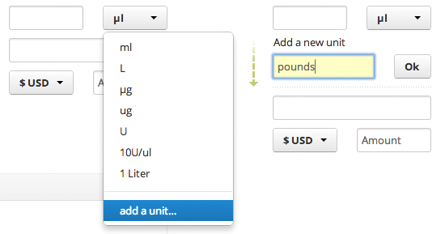

Widgets
Providing design direction and where possible prototype/example code for of the more obscure UI elements.
Pagination
Pagination should be blue link coloured numbers, aligned left under or above (or both) the main element. The relative word link previous / next should be visible and grey (inactive) at either end of the sequence. The current number in the sequence should be highlighted.
Popups and dialogs
Popups should be consistent and arrive in middle of the screen, with a clear title and close button. They can be completely lightboxed, darkening the entire page, or shadowed.
Add a task popup
Timers on protocols
Shopping list
Storage hierarchy browser
Inline editing
Inline editing of small pieces of data can be a much faster process for the user, but the UI affordances need to be very clear and the implementation clean and polished. Here are a few designed examples, but there are many opportunities for small interactions to improve user workflow. 
Form additions, above : most people will never have to add an extra unit to this field, so it makes sense to keep the option appended to the list. On activating add the extra field right there rather than going to another page and losing the contents of the form already entered.